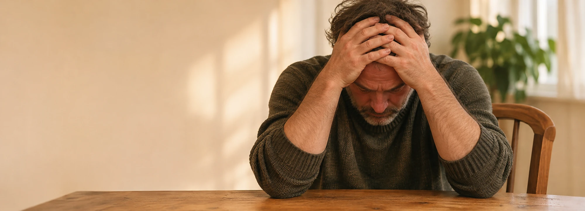
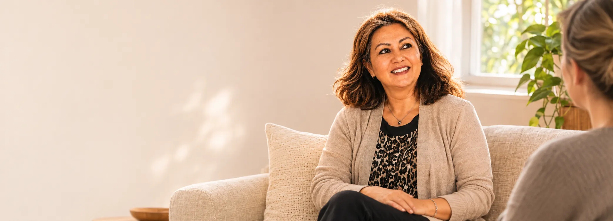
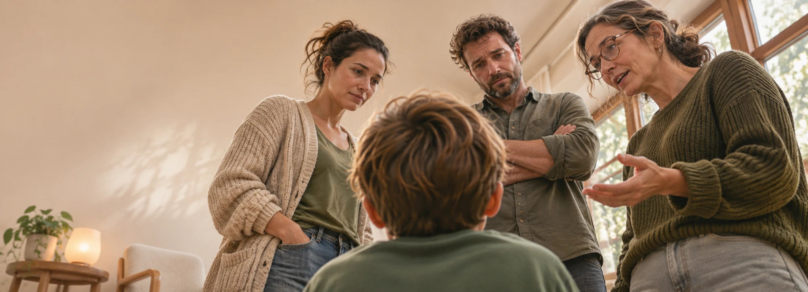

Levend verlies
Verlies is meer dan rouw na een overlijden. Ook wat je tijdens het leven verliest, kan je identiteit, je relaties, je toekomstbeeld of je dagelijks leven raken. Daar is aandacht voor.
Over levend verlies en rouwBegeleiding
Jouw verhaal is het vertrekpunt. Of het nu gaat om verlies, om patronen die je meedraagt of om je richting: de vorm volgt daaruit.

Verlies is meer dan rouw na een overlijden. Ook wat je tijdens het leven verliest, kan je identiteit, je relaties, je toekomstbeeld of je dagelijks leven raken. Daar is aandacht voor.
Over levend verlies en rouw
Stilstaan bij wat er speelt, betekenis geven aan wat je meemaakt en nieuwe mogelijkheden verkennen.
Over coaching
Soms draag je meer mee dan je eigen verhaal. Ervaringen, patronen en stiltes kunnen van generatie op generatie doorwerken.
Over patronen en generatiesMiddelen die volgen uit jouw verhaal, niet andersom
“Ik ontmoet de mens achter de vraag en onderzoek samen wat er werkelijk speelt. Daarbij put ik uit mijn ervaring en kennis van onder meer coaching, NLP en systemisch werk. Welke vorm van begeleiding passend is, hangt af van jouw verhaal en hulpvraag.”
Begin gewoon met een rustig telefonisch gesprek. Je hoeft nog niets te beslissen.